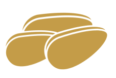

Il est temps de changer
vos habitudes
100
%
de nos bouteilles
sont recyclées
L'impact sur le changement climatique d'une bouteille de 75cl
Le malt est l’une des matières premières de la bière et est des plus impactantes. Sa production et sa transformation émettent de l’oxyde d’azote (polluant aérien fortement associé à l’effet de serre). De plus, elles provoquent une émission en CO2 de 0.91 kg de CO2 par kg de malt. Cela en fait un produit très polluant.
1
Pour 25L de nos bières, nous utilisons
environ 10kg de malt.
Notre recette nécessite 74g de 2 types de houblons différents soit 148g de houblons.
2
La production de 1 kg de houblon produit 3,5 à 5,5 kg de CO2. Dans une bière de 1L qui compte 110g de houblon, le houblon représente 0,2% de l'empreinte carbone totale de la bière. Le problème est que peu de houblon est produit en France, cela nécessite une importation par bateau, avion, train ou camion ce qui provoque une forte pollution.
Il existe 3 types de fabrication de levures :
➔ La levure liquide : une production de 1 kg de ce type de levure
produit 363 g eq. CO2.
➔ La levure pressée: 1 kg de cette levure produit 734 g eq. CO2.
➔ La levure sèche : 1 kg de cette dernière levure a une production de
3204 g eq. CO2.
Pour chaque forme de levure (liquide, pressée, sèche), l’impact
environnemental global est présenté en gramme équivalent de CO2 par
unité fonctionnelle.
3
Pour notre recette, nous avons utilisé
22g de levure sèche.
Nous avons utilisé environ 60L d’eau pour
notre recette.
4
L’eau est la matière première de la bière, la plus importante, elle représente environ 90% de celle-ci. L’eau a un grand rôle à jouer dans la stérilisation du matériel lors du brassage, il faut donc utiliser une grande quantité d’eau. Cependant, aujourd’hui l’eau est une ressource limitée sur Terre, de nombreux pays n’ont pas accès à l’eau potable. Il faut donc y faire bien plus attention.
Pour la bière, il faut un contenant qui n’altère pas le contenu : le
contenant le plus utilisé est le verre.
- le recyclage du verre permet de limiter la consommation de
ressources naturelles et de réduire les émissions de dioxyde de
carbone (CO2), il est recyclable à 100% sans perte de qualité
- les matières premières : calcin, sable, carbonate de sodium et
calcaire sont à plus de 95 % produites en France ; la distance moyenne
entre les verreries et leurs clients est de seulement 300 km.
- soutient une économie circulaire
- facile à nettoyer, stériliser et réutiliser

5
Pour nos contenants, nous utilisons
100% de verre recyclé.
En achetant nos bières, vous achetez un produit local, brassé sur place,
qui ne subit pas de nombreuses heures de transport. Nous nous engageons
à employer tous les moyens possibles pour la rendre moins polluante, en
surveillant notre consommation d’eau et en faisant venir les matières
premières les plus proches possibles.
Nous supprimons également tous les emballages.
Pensez à nous ramener vos bouteilles vides ou à les déposer dans les
poubelles à verre les plus proches de chez vous. Chaque tonne de verre
recyclée permet d'économiser environ 670 kg de CO2 dans l'atmosphère.